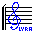
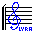

Si yo prefiero los gatos a los perros es porque no hay gatos policías.
Jean Cocteau (1889-1963), escritor francés.
El médico es el que conoce la inutilidad de la mayor parte de las medicinas.
Benjamín Franklin (1706-1790), científico estadounidense.
En la vida humana sólo unos pocos sueños se cumplen, la gran mayoría se roncan.
Enrique Jardiel Poncela (1901-1952), escritor español.
Para la mayoría de nosotros la verdadera vida es la vida que no llevamos.
Oscar Wilde (1854-1900), escritor británico.
El banquero es un señor que nos presta el paraguas cuando hace sol y nos lo exige cuando empieza a llover.
Mark Twain (1835-1910), escritor estadounidense.
Locura es seguir haciendo lo mismo y esperar resultados diferentes.
Albert Einstein (1879-1955), científico alemán.
Cada vez que se encuentre usted del lado de la mayoría, es tiempo de hacer una pausa y reflexionar.
Mark Twain (1835-1910), escritor estadounidense.
El periodismo consiste esencialmente en decir 'lord Jones ha muerto' a gente que no sabía que lord Jones estaba vivo.
Gilbert Chesterton (1874-1936), escritor británico.
El periodismo musical consiste en gente que no sabe escribir entrevistando a gente que no sabe hablar para gente que no sabe leer.
Frank Zappa (1940-1993), músico estadounidense
Para trabajar basta estar convencido de una cosa: que trabajar es menos aburrido que divertirse.
Charles Baudelaire (1821-1867), poeta francés.
El cine ayuda a soñar. La televisión, a dormir.
Jaume Perich (1941-1995), humorista español.
La amistad es un contrato por el cual nos obligamos a hacer pequeños favores a los demás para que los demás nos los hagan grandes.
Barón de Montesquieu (1689-1755), filósofo y jurista francés.
Te quiero como eres. Pero no me digas cómo eres...
Antonio Porchia, (1886-1968) escritor argentino.
Pasamos lo mejor de la vida diciendo "es demasiado pronto" y luego "es demasiado tarde".
Gustave Flaubert (1821-1880), escritor francés.
Estos son mis principios. Si a usted no le gustan, tengo otros.
Groucho Marx (1895-1977), actor, estadounidense.
Si sale, sale. Si no sale, hay que volver a empezar. Todo lo demás son fantasías.
Edouard Manet (1832-1883), pintor francés.